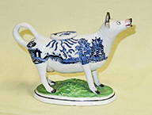
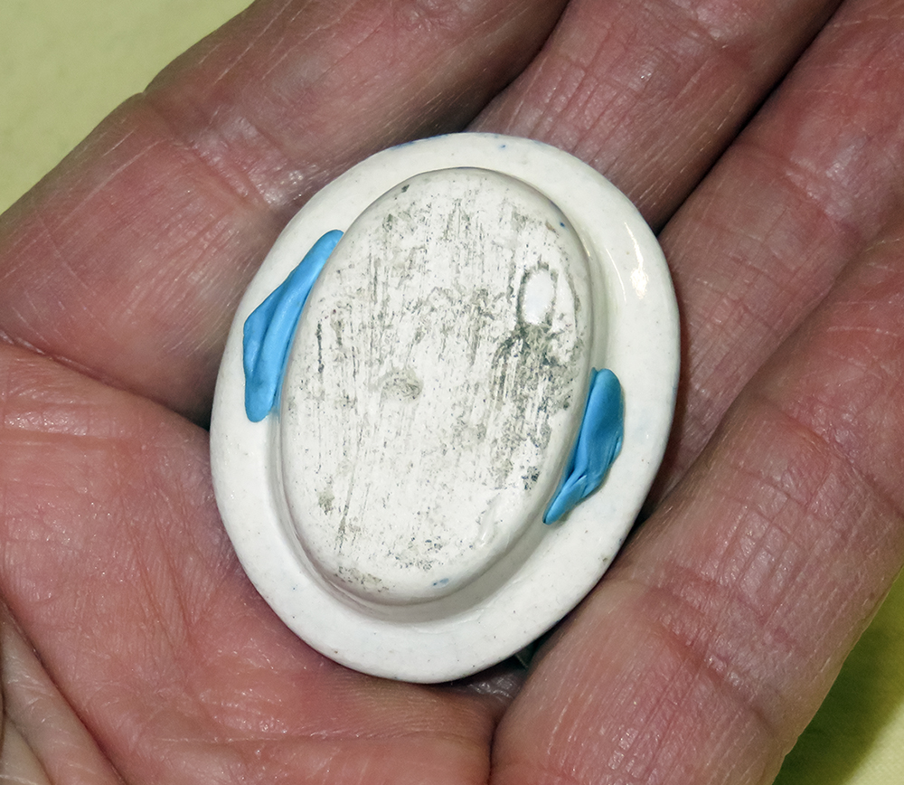
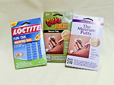
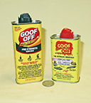

Care and Feeding of Cow Creamers
Well, 'feeding' may be a bit of a stretch, but care is definitely important, even if it's only your granmother's old Jackfield that you inherited. This of course is more critical if you have even a modest collection. I probably wouldn't have bothered to include this section on my web page, but I had a couple experiences that convinced me that even museums need a bit of tutelage at times. The first was simply reading that Gabrielle Keiller was - at least for a while - quite disp-leased with the was the Pottery Museum and Art Gallery in Stoke on Trent was displaying her collection, despite careful discussions regarding her wishes.
The second related to an article dated 1980 from Taylor University that lauded their Rice Cow Creamer collection, that had been donated by an alumnus who had made signidficant moiney with Dairy Queen. This collection numbers some 200 plus items and the article proudly claimed it was America's finest. So, on a cross country trip my wife and I stopped by Upland Indiana and arranged with their archivist to look at it. It turns out that the creamers were not only not on display, but were poorly wrapped, many in newapaper, and stuffed in cardboard boxes. Several had been broken while in storage, and the silver ones were badly tarnished. I'm sure that the Rices, who donated the collection to the university in 1978, would have been appooplectic if they knew how their alma mater was treating their treasures. I just rechecked the web, and there is a July 19 2019 article in the university paper that says the collection is being moved from a dicplay case back into the ASrchives, so perhaps the cows did get a bit of loving care at some point after I explained my concerns to the archivist.
Caring for cow creamers really isn't that hard. Rule #1 of course is that if you are going to actually use them, make sure they're clean inside and out. This is particularly true with some of the older 'Staffordshire' ones. Sanitation is much more well understood these days than when they were in wide use in the small crevices near the legs and going bad. ngland in the 18th and 19th centuries, and milk is now much more carefully prepared and stored. But they were, I'm told, respoobsibly for quite a number of illnesses and deaths from salmonella poisoning way back when, from milk getting caught in the small crevices at the top of the legs, and going bad because it wasn't thoroughly cleaned out.
Rule #2 is to store them securely, and if yoiu're in an earthquake prone area, make sure to use museum putty or some such (more ion this below) to hold them down. Silver ones are best displayed in a glass fronted case that reduces air curculation to minimize tarnishing, and it's best to put sume clalk or anti-tarnish paper in with them. Pure vsilver is very tarnish resitant, but even the highest level of sterling silver cointains other metals, like copper, that react to moisture and sulfur in the air.
Rule #3 is simply to dust (ceramic) or polish (silver and other metalls) them when needed. There are plenty of dust cloths available these days - I happen to use Swifter dry sweeping cloths. More on silver polish below. If they are really dirty (many are when first acquired), wash them by hand in a mild detergent - never put them in the dishwasher. I learned that early on through the loss of a horn on one of my favorites.
With those simple rules as a started, here anr a few more suggestions and tips. Click on any thumbnail for a larger picture.
  
|
|
|  | One thing NEVER to do with lids is to hold them on sith scotch tape. It is difficult to remove, especially after it has been on for a while. If you're desperate for something to hold a lid on while shipping use one of the removble masking takes made for painters, but again NEVER use scotch tape. I have received quite a number of old creamers where removing it impacted the glaze or colors. If you do have to remove scotch or other tapes, or for that matter the residue from stickers, I recommend "Goof Off". WD40 will also work but can leave a greasy film. Of course whichever you use, wash well afterwards with a mild detergent. |
{kind=link}
{kind=link}
{kind=link}
{kind=link}